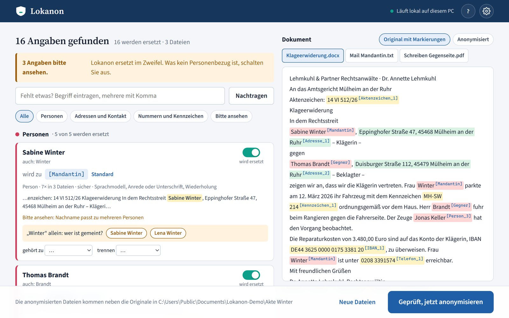

Lokanon
Mandatsunterlagen sicher mit KI bearbeiten
MotionBewegung mit Bedeutung
ProduktFunktionen für Kanzleien
RegieEin roter Faden
Montag, 8:40 Uhr
Eine Akte.
Ein Name.
Die Cloud ist tabu.
Ein Name.
Die Cloud ist tabu.
§ 203 StGB
§ 43e BRAO
Art. 28 DSGVO
Drei Regeln, kein Verbot der KI. Jede verbietet den Klarnamen.
Sabine Winter
Eppinghofer Straße 47
45468 Mülheim an der Ruhr
Aktenzeichen: 14 VI 512/26
Sehr geehrte Frau Winter,
im Verfahren vor dem Amtsgericht Mülheim
Sabine Winter[Person_1]
Eppinghofer Straße 47[Adresse_1]
45468 Mülheim an der Ruhr[Ort_1]
Aktenzeichen: 14 VI 512/26[Aktenzeichen_1]
Sehr geehrte Frau Winter[Person_1],
im Verfahren vor dem Amtsgericht Mülheim[Firma_1] haben wir
fristgerecht Stellung genommen. Die Gegenseite hat
Mit freundlichen Grüßen
Gefundene Personendaten
Person0
Adresse / Ort0
Nummern0
Firma / Behörde0
spaCy Deutsch
GLiNER
13 deutsche Erkenner
Texterkennung für Scans
Erkennen. Lokal, ohne Internet.
[Person_1][Mandantin]
[Adresse_1]
[Ort_1]
Aktenzeichen: [Aktenzeichen_1]
Sehr geehrte Frau [Person_1][Mandantin],
im Verfahren vor dem Amtsgericht Mülheim[Firma_1] haben wir
fristgerecht Stellung genommen. Die Gegenseite hat
Mit freundlichen Grüßen
Prüfen
Sabine Winter
→ [Person_1][Mandantin]
wird ersetzt
Eppinghofer Straße 47
→ [Adresse_1]
wird ersetzt
14 VI 512/26
→ [Aktenzeichen_1]
wird ersetzt
Amtsgericht Mülheim
→ [Firma_1]bleibt stehen
wird ersetztbleibt stehen
eigener Name: [Mandantin]
Prüfen und entscheiden. Mit einem Schalter.
[Mandantin]
[Adresse_1]
[Ort_1]
Aktenzeichen: [Aktenzeichen_1]
Sehr geehrte Frau [Mandantin],
im Verfahren vor dem Amtsgericht Mülheim haben wir
Bitte prüfen Sie die Fristen im Verfahren
[Aktenzeichen_1] für [Mandantin].
[Aktenzeichen_1] für [Mandantin].
Im Verfahren [Aktenzeichen_1]
endet die Frist für [Mandantin] am 14. April 2026.
Die Zustellung an die Anschrift
[Adresse_1] sollte bis dahin erfolgen.
endet die Frist für [Mandantin] am 14. April 2026.
Die Zustellung an die Anschrift
[Adresse_1] sollte bis dahin erfolgen.
Nachricht eingeben …
Antwort zurückübersetzt
Schlüssel nur auf diesem PC
Im Verfahren [Aktenzeichen_1]14 VI 512/26 endet die Frist für
[Mandantin]Sabine Winter am 14. April 2026.
Die Zustellung an die Anschrift
[Adresse_1]Eppinghofer Straße 47 sollte bis dahin erfolgen.
Die KI arbeitet. Der Name bleibt zu Hause.
Auf Wunsch zurückübersetzt. Der Schlüssel bleibt bei Ihnen.
Visitenkarte des Produkts
Was Lokanon kann
0 %Erkennungsrate, Referenzfälle
0 %Treffergenauigkeit
0 Bytesgehen zur Laufzeit ins Netz
0Schritte: Ablegen, Prüfen, Fertig
Läuft auf dem PC
Kopie im gleichen Format
Prüfen mit Schaltern
Eigene Bezeichnungen
Scans inklusive
Leck-Test vor jeder Ausgabe
Fragt bei Zweifeln nach
Mehr nur auf Wunsch
Gebaut für den Schreibtisch, nicht für die IT-Abteilung.
 1 · Ablegen
1 · Ablegen3 · Fertig

2 · PrüfenEchte Bildschirme aus Lokanon 0.2.0, erfundener Fall.
Ehrlich gesagt
Keine Erkennung ist vollständig. Die Prüfung bleibt beim Menschen.
Pseudonym, nicht anonym. Der Schlüssel bleibt in der Kanzlei.
Lokanon
Lokanon. Läuft auf Ihrem PC.
Windows 10/11 · pro Benutzer · ohne Adminrechte · ohne Internet